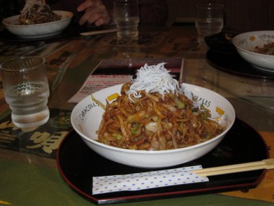
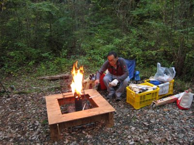
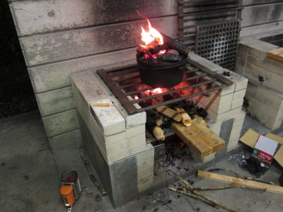
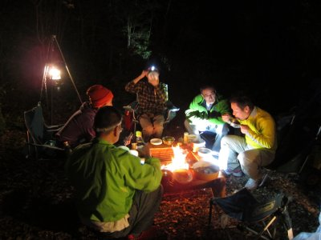
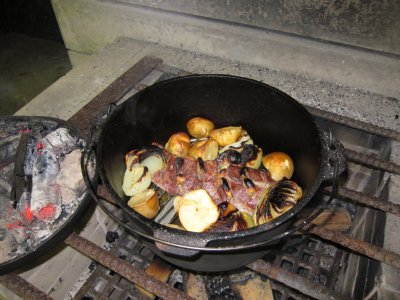

丸火自然公園キャンプ | 2013年11月 |
|---|---|
| 富士山麓にある丸火自然公園でのキャンプは、この時期は人が少なく、暑くなく、それほど寒くなくと、かなり快適です。 紅葉と天気がどうだろうという所がポイントになりますが、こればかりはしょうがないですね。 一日目（土曜） お昼はTVチャンピオンで生まれたという「佐重」のロブスターソースの富士みそ焼きそばを食べていきました。濃厚で美味しい〜 | |
|  ロブスターソースの富士みそ焼きそば |  テント張ってタープもね |
| 食材などを買い込みキャンプ場に着いたのは3時頃でしょうか。 今日の天気は曇り。どんよりとした雲が頭上を覆っています。予報では雨になりそうなので、サムちゃんテントはタープを張ります。私たちテントはタープがないためそのまま。今度タープを買おう。 テントサイトを３っつ借りているので、一つは宴会場です。ここもタープなし。 天気が良いと園内を散歩するのですが、どんよりの曇り空でキャンセル。明日天気良ければ歩こうという事になりました。 今回は夕食を一人一品何かを作る事になってまして、その準備もしなければなりません。私はローストポーク。初めて作ります。キャンプなので豪快にデカい肉だろうと考え、ダッチオーブンで出来るものをチョイスしました。手間もかかりそうにないし。 | |
|  焚き火と廻りの台も完璧 |  ダッチは炊事場で |
| 肉に切り込みをして、香辛料などをすり込み休ませます。焚火でやりたいので火を起こします。 1時間ほど休ませたら焚火の上にダッチを置き、ダッチの上に焚火を追加して上からも熱を加えます。この上焚火がなかなか火がつかなくて苦労しました。火が付いた木や炭を移動させると消えちゃうんだもんな〜 なんとか火が付き所定の時間が過ぎたけど、蓋を開けるとまだまだ・・・よし、上焚火追加！ なんとかできたローストポークは、肉は柔らかくなりいい感じに出来ました。よかった〜 | |
|  焚き火とランタン イイネ〜〜 |  ローストポークも出来た〜＼(^_^)／ |
| 皆も色々作って豪華な夕食です。パエリヤやポトフ、おでん、チヂミ、ミルフィーユ鍋などなど。ミルフィーユ鍋は〆にラーメンにしました。 焚火を囲みながらの夕食は良いですね。お酒も入っていい気分です。 ところが途中で雨が降ってきまして、急きょ近くの炊事場に避難。そこで宴会の続きです。照明もついて明るくなったけど、キャンプっぽくなくなたったかな。 夜遅くまでおしゃべりしてました。（私は途中で寝ましたが） | |
 火の光って癒されます |  これ朝食です チーズフォンデュ、ソーセージ、パン |
| 二日目（日曜） ちょっと小雨。昨日と同じく炊事場で朝食。 サムちゃんが昨日出来なかったチーズフォンデュを披露。朝から贅沢だ。昨日は体調崩して本日朝から「かむい」さん参加。 雨が降っているため園内散歩は諦め、のんびりまったりと朝食タイム。10時位までのんびりしてました。今回はここで終了。 雨の中のキャンプもいいですね。屋根があったからかもだけど。のんびりと食事しただけのキャンプになってしまったけど、それも大事かな。またやりたいです。 | |
| 写真＆コメント ｂｙ べっしー | |